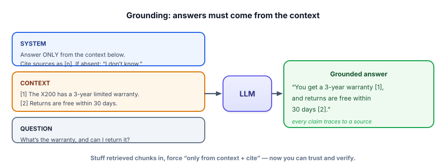

Grounding & citations
Retrieval found the right text. Now make the model actually use it, cite it, and admit when the answer isn’t there. This is where RAG converts retrieved chunks into a trustworthy, verifiable answer — and where a sloppy prompt can throw away all your retrieval work.
Retrieval isn’t enough on its own
You can retrieve perfect chunks and still get a hallucinated answer if the prompt lets the model fall back on its memory. Grounding is the discipline of forcing the answer to come only from the supplied context — and to say so when the context doesn’t contain it. Done right, every claim the model makes can be traced to a source you can check. That traceability is the difference between “a chatbot said so” and “here’s the answer, and here’s the document it came from.”
Grounding means instructing the model to answer strictly from the provided context. Faithfulness is the property that the answer is actually supported by that context (no invented claims). Citations are references (like [1], [2]) tying each claim to the chunk it came from. Abstention is the model saying “I don’t know” or “not in the provided documents” when the answer isn’t present — a feature, not a failure.
Grounding is a school report where the teacher says: every sentence needs a footnote to a page in the books on your desk, and if the books do not say it, write "not in my sources". A student who adds a fact from memory without a footnote loses marks even if the fact is true. The analogy breaks because a teacher checks the footnotes by reading the page; your system only checks footnotes if you write code or a judge to do it.

[n], abstain if absent.” Now every sentence is checkable.The grounded-prompt recipe
- Number the chunks in the context block (
[1],[2], …) and keep their sources alongside. - Instruct strictly: “Answer using only the context. Cite the chunk number(s) for each claim. If the answer isn’t in the context, say you don’t know.”
- Put the question last (recency helps; Track 1.4).
- Verify the citations programmatically — don’t just trust that
[2]really supports the claim.
Grounded vs. ungrounded
Same question, same model. The only difference is whether retrieved sources are supplied and the model is told to use only them.
Build the grounded prompt, then check that what the model cited actually exists. Verification is what makes citations trustworthy rather than decorative.
import ollama, re
def grounded_answer(question, chunks):
# chunks: list of {"text":..., "source":...}
context = "\n".join(f"[{i+1}] {c['text']}" for i, c in enumerate(chunks))
prompt = f"""Use ONLY the context to answer. After each claim, cite its number like [1].
If the answer is not in the context, reply exactly: "Not in the provided documents."
Context:
{context}
Question: {question}"""
ans = ollama.chat(model="llama3.2",
messages=[{"role": "user", "content": prompt}])["message"]["content"]
# VERIFY: every cited number must be a real chunk we supplied
cited = {int(n) for n in re.findall(r"\[(\d+)\]", ans)}
valid = all(1 <= n <= len(chunks) for n in cited)
sources = [chunks[n - 1]["source"] for n in sorted(cited) if 1 <= n <= len(chunks)]
return {"answer": ans, "citations_valid": valid, "sources": sources}
out = grounded_answer("How long is the warranty?",
[{"text": "The X200 has a 3-year limited warranty.", "source": "warranty.md"}])
print(out) # answer "...3-year... [1]", citations_valid=True, sources=["warranty.md"]For stricter systems, go further: check that the cited chunk’s text actually supports the claim (string overlap, or an LLM-as-judge faithfulness check from Track 6). A citation that points at an unrelated chunk is worse than none.
Assumptions: 60,000 employees, 9,000 questions a day, about 6% of questions not covered by any policy, each answer built from 3,000 tokens of context, judged by claude-sonnet-5-5 at $2 / $10 per million input / output tokens (Anthropic models overview, checked 2026-11-03).
- Expected abstentions. 9,000 x 6% = 540 questions a day should end in "Not in the provided documents". Track the abstain rate daily: if it drops to 1%, the bot has started guessing.
- Citation validity check. A regex that every [n] points to a real chunk costs nothing and runs on all 9,000 answers.
- Faithfulness judge on everything. Per answer: 3,000 context + 300 answer + 200 instructions = 3,500 input tokens and about 150 output tokens. Daily input: 9,000 x 3,500 = 31.5 M tokens x $2 = $63. Daily output: 9,000 x 150 = 1.35 M x $10 = $13.50. Total about $76.50 a day.
- Or sample. Judging a 10% random sample costs about $7.65 a day. With 900 judged answers a day, a faithfulness rate near 0.9 has a 95% margin of about 1.96 x sqrt(0.9 x 0.1 / 900) = 0.0196, roughly 2 points, which is enough to catch a regression within a day.
- Escalate the risky ones. Judge 100% of answers on high-stakes topics (pay, leave, disciplinary) and sample the rest.
The lesson: citations make answers checkable, but only the checks (regex, judge, abstain rate) tell you the bot is actually behaving.
- Retrieval supplies evidence; grounding forces the model to use only that evidence and abstain otherwise.
- Recipe: number the chunks, instruct “only from context + cite [n] + say I don’t know,” put the question last.
- Abstention is a feature — “not in the documents” beats a confident hallucination.
- Verify citations programmatically; don’t assume a cited chunk actually supports the claim.
- Citations turn answers from “trust me” into “here’s the source” — the core of trustworthy RAG.
Your grounded RAG bot is asked something genuinely not covered by any retrieved chunk. What’s the desired behavior, and how do you get it?
Why attach citations to a grounded answer?
An answer says "Parental leave is 26 weeks [1] and can be split into two blocks [2]." Chunk [2] does not mention splitting. Which check catches this?
1. Write the system instruction for a grounded medical-info assistant that must cite sources and never guess. What clauses are non-negotiable?
2. Two retrieved chunks disagree (one says 30-day returns, one says 14-day). How should a good grounded prompt handle this?
3. Your bot cites [3] but chunk 3 doesn’t actually contain the claim. What kind of failure is this, and how do you catch it?
▸ Show solutions & reasoning
1. Non-negotiable clauses: “Answer only from the provided context”; “cite the source for every claim”; “if the answer is not in the context, say so and do not guess”; and for this domain, “do not provide medical advice beyond the cited sources; recommend consulting a professional.” The combination of only-from-context + cite + abstain is what makes it safe and verifiable.
2. The prompt should instruct the model to surface the conflict rather than silently pick one: “If sources disagree, report both and cite each.” A good grounded answer might be “Source [1] says 30 days; source [2] says 14 days — please verify which applies.” Hiding the disagreement would present a false certainty; exposing it (with citations) lets a human resolve it.
3. This is a faithfulness failure (a mis-citation / unsupported claim) — the answer looks grounded but the citation doesn’t back it. Catch it with verification: check that the cited chunk’s text actually supports the claim, via string/keyword overlap or an LLM-as-judge faithfulness check (Track 6). Citation format validity isn’t enough; you must verify the citation’s content truly supports what was said.
“Grounded” isn’t a vibe — it’s something you can score. The key metric is faithfulness (also called groundedness): the fraction of claims in the answer that are actually supported by the retrieved context. You estimate it by decomposing the answer into individual claims and checking each against the cited chunks — increasingly with an LLM-as-judge (Track 6) that reads claim + source and returns supported / unsupported. A separate metric, answer relevance, asks whether the answer actually addresses the question (a faithful answer can still be off-topic). Strong RAG teams track both on every release.
Why this matters: grounding reduces hallucination dramatically but doesn’t eliminate it. Models can still paraphrase a source into something subtly wrong, blend two chunks into a claim neither makes, or cite the right chunk for the wrong sentence. So the production posture is layered: ground hard in the prompt, verify citations exist, measure faithfulness, and for high-stakes use surface the sources to the user so they can check. You’re not asking the model to be trustworthy — you’re building a system where its claims are checkable, which is a far stronger guarantee. That checkability, more than any single prompt trick, is what makes RAG safe to ship.
labs/03_rag_local.pyFree and offline once set up: Ollama with qwen2.5:7b, plus the packages in labs/README.md. From the course folder:
python labs/03_rag_local.pyWhat to look for: Look at the final step of the lab: the grounded answer with [doc-id] citations, and the refusal when the best retrieval score is below the threshold. Check that each cited id is one of the retrieved chunks. Then raise the threshold until a question you know is answerable gets refused, and lower it until an off-topic question gets an answer: that range is the precision-versus-coverage dial for abstention. Note the refusal here is a retrieval-score gate, not a judge-based faithfulness check.
▸ Recorded output (our run, 2026-11-03, qwen2.5:7b on a laptop GPU)
out of the top 3. On this tiny corpus dense already wins; hybrid earns its keep on big corpora full of
near-identical codes (SKUs, error ids) that embeddings blur. Never assume: measure hit@k (lab 06).
5) Grounded answers with citations, and a refusal when retrieval is weak
Q: I was charged twice for one order. What happens now?
A: If you were charged twice for one order, the duplicate payment is reversed automatically within 3 business days [pay-01#0]. If it is not reversed after 3 business days, raise a billing ticket with both transaction ids.
citations=['pay-01#0'] all-cited-ids-were-retrieved=True
Q: Can I change my delivery address after the order has shipped?
A: No, you cannot change your delivery address after the order has shipped. According to [ship-03#0], the address can only be changed before the order is packed.
citations=['ship-03#0'] all-cited-ids-were-retrieved=True
Q: Do you deliver to Antarctica by drone?
A: I don't know based on our policies. (refused before calling the LLM: best cosine 0.27 < 0.35)
citations=[] all-cited-ids-were-retrieved=True
Look: every factual sentence carries an id you can check; the off-topic question is refused
cheaply by the retrieval threshold, so the model never gets a chance to make something up.Your numbers will differ a little run to run. Full log: labs/outputs. Source: labs/03_rag_local.py.
Warm-up. An answer has 5 claims. 4 are supported by the cited chunks; 1 is not supported by any retrieved chunk. What is its faithfulness score?
▸ Solution
Faithfulness = supported claims / total claims = 4 / 5 = 0.8. This is the definition used by RAGAS: split the answer into claims and check each against the retrieved context. One unsupported claim in five is a serious problem in a policy bot, so you look at which claim and why.
Transfer. Users complain the bot abstains too much: 25% of questions get "Not in the provided documents" even though the policy exists. Where do you look first?
▸ Solution
At retrieval, not the prompt. Take a sample of the abstentions and check whether the answering chunk was in the retrieved context. If it was missing, it is a recall problem (chunking, embedder, hybrid search, k too small, or a too-strict score threshold); fix retrieval and the abstentions turn into answers. If the chunk was present and the model still abstained, the instruction is too strict or the chunk is phrased indirectly, so adjust the prompt or add an example. Measure the abstain rate split into "correct abstention" and "wrong abstention" on a labelled set.
Stretch. Design a citation format and verification step for answers that combine two sources, e.g. "Contractors get 10 days of leave [3], prorated for part-time [5]." How do you make the check cheap at 9,000 answers a day?
▸ Solution
Format: one or more citations at the end of each sentence, and require each sentence to be one claim where possible. Verification in two tiers. Tier 1, free: parse sentences and their citation ids, check ids exist, and do a lexical check that key numbers and named entities in the sentence (10, part-time) appear in the cited chunks. Most bad citations fail this. Tier 2, paid: send only sentences that fail or are ambiguous, plus a random sample, to an LLM judge that returns supported or unsupported for each (sentence, cited chunks) pair. Log per-sentence verdicts so you can compute faithfulness and find which document types cause slips.
Junior How do you make a RAG answer grounded?
▸ Model answer
Number the retrieved chunks in the prompt and tell the model to answer only from them, cite the chunk number for each claim, and say it does not know if the answer is not there. Put the question after the context. Then verify in code that each cited number refers to a chunk you actually supplied. Grounding reduces hallucination a lot but does not remove it, so you also measure faithfulness on a sample.
Mid What is the difference between faithfulness and answer correctness?
▸ Model answer
Faithfulness asks whether every claim in the answer is supported by the retrieved context; it does not care whether the context itself is right. Answer correctness compares the answer against a reference answer or the truth. You can be faithful and wrong if retrieval fetched an outdated policy, and correct but unfaithful if the model answered from memory and got lucky. In RAG you want both, and measuring them separately tells you whether to fix generation or fix the data and retrieval.
Senior Legal wants a guarantee that the bot never states anything unsupported. What can you honestly promise, and what do you build?
▸ Model answer
I cannot promise zero; models can paraphrase a source into something subtly different. I can promise layered controls and measured rates. Build: strict grounding prompt with abstention; per-sentence citations; automated support checks (lexical then LLM judge) on high-stakes answers, blocking or flagging any sentence that fails; showing sources to users with quotes so they can verify; and a monitored faithfulness rate on a daily sample with a confidence interval and alerting. I would also calibrate the judge against lawyer-labelled examples so its verdicts mean something. Then the promise is a measured, monitored number, not a hope.
You can now build a RAG system that retrieves, grounds, and cites. The last question — the one that separates demos from products — is: how do you know it’s actually any good? Next: evaluating retrieval quality.